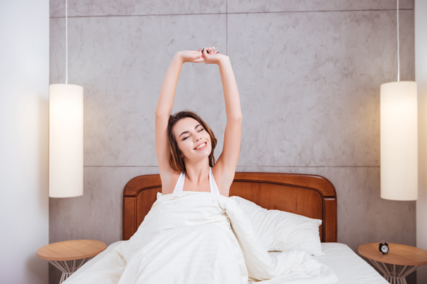

原文连接:https://www.daquan.com/post/13142.html
黑枸杞有很好的滋补身体的作用，女人用黑枸杞泡水喝也是非常好的。因为黑枸杞有着抗衰老的功效，所以女性多喝黑枸杞茶是能够美容养颜的。并且黑枸杞是有着消炎的功效，长期喝黑枸杞的女性是可以预防以及治疗妇科炎症的。
女人喝黑枸杞泡水好吗

1、 缓解衰老
女人喝黑枸杞是非常好的，这是因为黑枸杞中含有抗衰老的成分，在现代的社会女性也是有着很重压力的，并且很多女性都在为生计奔波。黑枸杞有着滋补身体的作用，并且黑枸杞提高免疫力，身体健康并且能够有效抗衰老，所以黑枸杞女性泡水喝是可以有效缓解衰老的。
2、 预防妇科炎症
女性妇科炎症是女性顽固的疾病，并且妇科疾病一旦产生非常不容易好，很多结婚后生过孩子的女性都有着妇科炎症。黑枸杞有着消炎的功效，女性用黑枸杞泡水喝是能够预防妇科炎症，有妇科炎症的女性可以使用黑枸杞来辅助治疗。
3、 帮助治疗泌尿感染

泌尿系感染也是女性常见的疾病，泌尿系感染是非常容易反复，女性泌尿系感染是很影响生活的。泌尿系感染的女性是会感觉尿频、尿急、尿不尽的，并且女性泌尿系感染会严重影响到性生活。女性多喝黑枸杞是可以治疗女性的泌尿系感染。
4、 养颜美容
黑枸杞有着很好的美容养颜的作用，因为黑枸杞的成分中能够补充胶原蛋白并且能够修复疤痕淡化色斑，美白肌肤所以黑枸杞是很好的养颜美容的滋补品，所以建议女性朋友可以多使用黑枸杞来美容养颜。
5、 治疗失眠

很多女性都有着失眠的情况，女性失眠会引起皮肤暗沉并且会导致女性的免疫力下降引起很多疾病。更年期女性失眠是非常严重的，这样会影响日常的生活，导致记忆力下降严重所以女性可以喝黑枸杞泡茶来帮助改善睡眠治疗失眠。
6、 保护血管健康
现在心血管问题是比较严重的疾病，女性喝黑枸杞泡茶能够帮助改善心血管的循环，预防心血管疾病。所以建议大家可以使用黑枸杞来泡茶喝，特别是体型偏胖的，有高血压的朋友是可以帮助预防心血管疾病的。
结语：通过上文的介绍，相信大家都了解了关于女人喝黑枸杞泡水好吗的答案，女性朋友喝黑枸杞泡茶的好处是很多的，并且黑枸杞有着美容的功效，是女性非常好的美容茶。